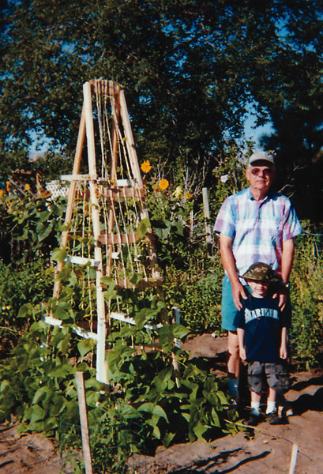

I was dismayed to see your endorsement of offensive fencing and barb(aric) wire in “Fencing for the Homestead,” February/ March 2006.
I have watched panicked donkeys and a confused cow and her calf be ripped by barbed wire. I have seen birds and small animals zapped by electric wiring, and an armadillo galloping along woven wire pursued by dogs. The author has a 7-foot-high electric fence to keep out deer. Why is he worried about deer? Livestock and irresponsible grazing practices have destroyed 99 percent of our prairies. There wouldn’t be a deer problem if predators hadn’t been trapped, poisoned and shot to extinction on the chance that two or three cows might become prey before making it to the slaughterhouse. I wonder why a magazine called Mother Earth News is perpetuating the fundamental error made by European settlers of the New World: inability to coexist with native peoples, plants and animals.
May I suggest alternatives for people with acreage? Don’t fence?-?restore habitat and maintain corridors for wildlife.
Hope Phillips
Austin, Texas
Your review of Richard Louv’s Last Child In The Woods was a breath of fresh air (“Green Gazette,” February/March 2006).
Today’s kids aren’t nearly as active as when I was a child. I grew up on a small farm in a rural area of New York and would often go to friends’ houses, or they would walk or bike over to mine. Pickup games of baseball, kickball and the like were common, but the most common activity was just being kids: seeing who could jump across the stream without getting their feet wet, making a treehouse out of scrap lumber our dads gave us, lying on the back hill in the sunshine watching the clouds go by.
Today’s children are plugged into either computers or televisions for hours at a time. I rarely see the kids of my town out, let alone playing together. Thanks for reminding us again why we need to be connected to our Mother.
Denise A. Gaylord
Philadelphia, Tennessee
In response to comments about insert cards in your magazine, I have a suggestion. First, I have to trust Mother Earth News’ response that this is the best, most economical way to get subscriptions.
Given that, I decided not to recycle the inserts in the traditional way but to place them in the library, the gym, on any bulletin board I can find, etc. You would be surprised at the places you can find to leave them.
I have even, rather clandestinely, placed them inside other magazines in doctors’ offices. I will never know if this actually results in new subscriptions, but it’s better than complaining, and there’s always the possibility that someone out there will take the bait and subscribe!
Virginia Maus
Camp Hill, Pennsylvania
I really appreciated your article on great garden catalogs (December/January 2006). However, I would never say that Peaceful Valley Farm Supply’s catalog “overwhelms” me! On the contrary, I read it cover to cover and have learned a great deal by doing so. Not only do they offer a wide range of organic products, they provide the best customer service. Unlike many gardening supply/seed catalogs, this one also has a thorough product index.
Thank you for your many comprehensive gardening articles.
Celia Ann De Frank
Big Bear City, California
Thanks for the great article about seed catalogs. I would add the wildflower catalog from Wildseed Farms in Fredericksburg, Texas. They offer seeds in amounts from packets to pounds, for all areas of the 48 contiguous states. There also is excellent gardening information in the catalog.
Elva Pilling
Great Falls, Montana
I am a woman market gardener. Most information on greenhouse construction, row width, etc., is scaled to men. Women are shorter and have less body strength (for the most part) than men. I would like some references on how other women have done things. For example, have other women figured out how greenhouses can be set up and maintained by one woman alone? I have conquered the bed-width dilemma by using 3-foot-wide beds and making them longer. I am a no-till gardener and am buying a piece of land that is fallow. Is there a tool that can be rocked back and forth to loosen the soil that is only 3 feet wide, and that a woman of reasonable strength can maneuver?
Jackie Smith
Bloomingdale, Michigan
Lynn Byczynski, editor of Growing for Market, a monthly journal for direct-market farmers, replies:
I do know several farms run entirely by women, and from them I have learned a couple of things that everyone, male and female, might appreciate as they get older.
In our hoophouses, we use the broadfork for loosening the soil, rather than tilling it with every crop. If you aren’t familiar with this tool, Johnny’s Selected Seeds offers three sizes. I was in a greenhouse in Pennsylvania recently that consisted of 8-inch-deep raised beds erected on top of greenhouse benches. It was used for salad greens and microgreens, which are labor-intensive, and this system eliminated bending during harvest. As for breaking out fallow soil at your new place, get a neighbor to plow and till the field, then seed grass paths wide enough for a riding mower. Mulch the beds once they are plowed and tilled, and the grass paths will make life wonderful. We switched to this system for all our field crops a couple of years ago, and I can’t tell you how much easier it is now to plant and harvest.
A few issues ago, we read an article about heating with scrap wood. We use natural gas in our farmhouse, which was good until the gas cost was predicted to rise 70 percent this year. We just built a barn, and we saved all our scrap wood. A friend stopped using his wood/coal stove and let us have it, so we were in the heating business. We found a door company that would deliver a dump-truck load of scrap oak, about 8 tons, for the hauling bill of $25. We have it in the wood shed for this winter. The temperature already has gotten down to 10 degrees, but we are warm as can be, and so far the heating for this winter has cost us just the $25. Thanks for this information, a very good idea that works with little or no effort.
Freddie and Jane Wilkinson
Bristol, Virginia
I was disappointed that you did not mention bicycles as an alternative means of transportation (“Green Means Go,” October/ November 2005). Also missing was public transportation. Bicycle and train combined allow me to get to work without stopping at a gas station. I also save on car payments, registration and insurance.
Kirk Wells
Corona, California
We have articles about bicycles and motorcycles underway. Public transportation certainly is the way to go for those with access, but unfortunately it is not yet widespread.?-?Mother
In the discussion of older cars that get better mileage, I never see mention of the 1978 diesel Volkswagen Rabbit. I bought a stock 1,600-cc diesel Rabbit in 1978. One road trip, I filled up in Houston, drove to Fort Worth and returned on the same tank of fuel. Driving 55 mph (the speed limit then), it calculated out to a hair over 57 mpg for the round trip. Why don’t they get that now?
Elbert Marks
Houston, Texas
Just finished reading “Green Means Go” in the October/November 2005 issue. I am not impressed - many of the vehicles don’t get even 35 miles per gallon. I own a 1980 Toyota pickup with over 350,000 miles on it that still gets almost 30 mpg. It seems to me, in the space of 25 years, that automakers could do better!
As for the gasoline/electric hybrid Toyota Prius, 60 mpg seems disappointing. As the article says, the Prius is still two-thirds dependent on fossil fuel - I think Toyota engineers could do a much better job.
Victor McKechnik
Timberon, New Mexico
Some readers have asked why hybrids don’t get higher fuel economy, considering that some cars of a decade ago got up to 55 mpg. It’s a good question with a simple answer. Small, minimally powered (49 to 55 horsepower) cars like the Geo Metro did achieve great fuel economy, but they were far from cars for the masses. Buying patterns over decades have shown that small cars with modest performance have not been high on the American car buyer’s shopping list. Hybrids such as Toyota’s Prius and Honda’s Insight and Civic Hybrid also get exceptional fuel economy, with combined city/highway fuel economy estimates of 55, 63 and 50 mpg, respectively. They are far better cars than the Metro in all respects.
Ultimately, the goal shouldn’t be just to create a small number of very fuel-efficient vehicles, but to apply efficient hybrid power to a wide range of popular vehicles, from family sedans and pickups to minivans and SUVs, with sports cars thrown in for good measure. Hybrid systems can make all vehicle models much more fuel efficient while also reducing tailpipe emissions?-?features that will help improve air quality, decrease greenhouse gas emissions and significantly reduce petroleum use.
Ron Cogan
Editor and Publisher, Green Car Journal
www.greencar.com
|
 |
|
|